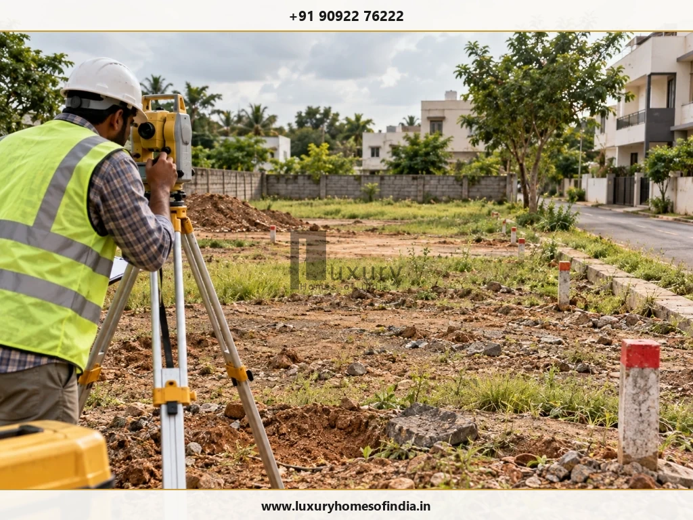
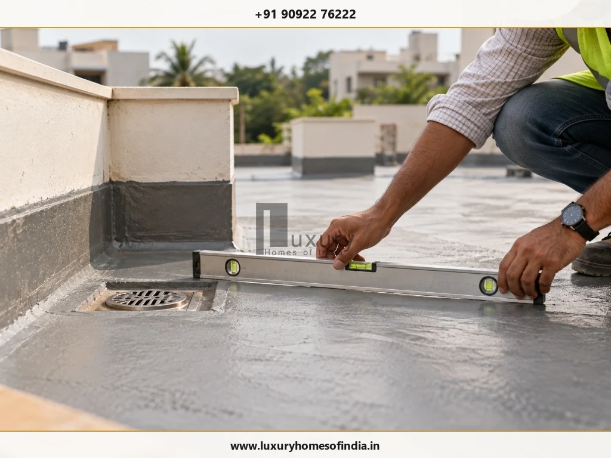

Before building a luxury home, review the property's legal documents, site conditions, architectural plans, applicable approvals, construction budget, material specifications and professional appointments. You should also coordinate structural engineering, building services, waterproofing, interiors and the construction agreement before work begins. A clear pre-construction plan helps you identify missing information, define responsibilities and reduce avoidable changes during execution.
For homeowners planning a luxury villa or independent house in Chennai, site levels, drainage, heat, humidity and seasonal rainfall deserve particular attention. The objective is not simply to finalise an impressive design. It is to establish a practical, technically coordinated and financially understood scope of work.
This guide provides a step-by-step checklist to help you prepare for construction, understand which decisions need professional input and identify the documents and specifications that should be agreed before the contractor begins work on site.

Pre-Construction Audit: Core Priorities
- Property & Legal Due Diligence: Verify title, easements, boundaries and zoning rules before commissioning detailed architectural drawings.
- Site Conditions & Engineering: Conduct plot-specific soil testing, topographical surveys and finished ground level calculations to safeguard against waterlogging.
- Multi-Disciplinary Coordination: Align architectural drawings, structural engineering, MEP routing, waterproofing details and interior joinery prior to site excavation.
- Contractual & Financial Clarity: Base builder agreements on itemised BOQs, documented material allowances, milestone inspection gates and written variation protocols.
1. Verify the Plot and Property Documents
Start with the property, not the house design. The proposed home must suit the actual plot, its boundaries, permitted use and documented access.
Before commissioning detailed design work, review:
- Ownership and title documents with an appropriate property lawyer.
- Survey records, plot dimensions and boundary conditions.
- Access rights, easements and relevant restrictions.
- Applicable land-use and development requirements.
- Existing structures, encroachments or unresolved boundary issues.
- Any property-specific constraints that could affect construction.
Arrange a site measurement where necessary. Do not rely solely on a property brochure, an informal sketch or verbal assurances about dimensions.
2. Assess the Site Before Designing the House
The site can influence foundation design, entrance levels, drainage, construction access and the placement of outdoor spaces.
Review these items with the relevant professionals:
- Site measurements and topographical survey, where required.
- Ground levels and surrounding road or property levels.
- Soil investigation appropriate to the proposed building.
- Groundwater conditions where relevant.
- Existing trees, neighbouring structures and utility locations.
- Construction vehicle access and material delivery constraints.
- Existing drainage patterns and potential waterlogging.
In Chennai, pay particular attention to rainfall runoff, site drainage and the relationship between the plot and surrounding ground levels. These conditions can influence the finished ground level, entrance design and external works.
Foundation selection should follow appropriate site investigation and engineering design, rather than copying a solution used on another property.

3. Define Your Lifestyle and Space Requirements
A luxury home should support how its occupants live, work, relax and entertain. Establish these priorities before the architectural layout becomes difficult or expensive to change.
Consider:
- Bedroom, bathroom and guest accommodation requirements.
- Family living, formal entertaining and dining spaces.
- Home office, study or library provisions.
- Storage, utility and household support spaces.
- Parking, vehicle access and circulation.
- Lift provisions and accessibility requirements.
- Gardens, courtyards, terraces or swimming pools.
- Entertainment, wellness and home-theatre spaces.
- Future changes in household needs.
Not every feature belongs in every home. Consider the space, cost, maintenance and operating requirements of each proposed amenity.
4. Finalise the Architectural Design and Drawings
Before construction begins, review the architectural drawings with the appointed architect and relevant consultants.
Check:
- Room dimensions, furniture placement and circulation.
- Kitchen storage, appliance locations and utility requirements.
- Bathroom layouts and plumbing coordination.
- Staircases, lift provisions and vertical circulation.
- Window positions, daylight, privacy and ventilation.
- Elevation design and exterior material specifications.
- Balconies, terraces, courtyards and outdoor spaces.
- Built-up area calculations and the agreed scope.
- Structural elements that require specialist engineering input.
Coordinate the interior design with the architectural layout. Ceiling designs, lighting, cabinetry, electrical points and air-conditioning provisions should not be developed independently of one another.
A major benefit of pre-construction coordination is that it makes changes easier to assess before they affect completed work. Establish which drawings are approved for construction and how revisions will be documented.
5. Confirm Building Approvals and Regulatory Requirements
The permissions required depend on the property's location, land use, proposed building and applicable regulations.
Before authorising construction:
- Identify the competent planning or local authority.
- Confirm the applicable building and development requirements.
- Establish the required approvals and supporting documents.
- Check that the proposed design addresses relevant development controls.
- Assign responsibility for preparing, submitting and following up on applications.
- Confirm how permitted design changes will be handled.
- Identify any additional clearances applicable to the site or project.
For a property in Chennai or its surrounding areas, verify the appropriate authority and approval process for that specific location. Do not assume the process is identical across every jurisdiction.
If a professional or contractor is assisting with approvals, document the precise scope of that assistance. Submission support should not be treated as a guarantee of approval.
6. Establish a Realistic Construction Budget
A luxury-home budget should reflect the intended scope, not just a headline rate per square foot.
Prepare an estimate that accounts for:
- The agreed built-up area and measurement basis.
- Structural and civil construction.
- Materials, finishes and installation specifications.
- Interior design and interior execution.
- Electrical, plumbing, air-conditioning and other services.
- External development, landscaping and boundary works.
- Specialist amenities such as lifts or swimming pools.
- Applicable approval, utility and contractual charges.
- Taxes, exclusions and owner-supplied materials.
- A project-appropriate contingency.
Request an itemised quotation or bill of quantities (BOQ). Identify allowances, provisional items, exclusions and the basis for pricing additional work.
Contingency Planning: An illustrative contingency of 5–10% of the base construction estimate may be considered during early planning, but the appropriate amount depends on design maturity, site uncertainty and contractual exclusions.
7. Specify Materials and Finishes Clearly
Luxury materials should be selected for their suitability, durability, installation requirements and maintenance—not appearance alone.
Document the relevant specifications for:
- Structural and masonry materials.
- Flooring, wall finishes and surface treatments.
- Doors, windows, glazing and hardware.
- Plumbing pipes, sanitaryware and fittings.
- Electrical wiring, switches, lighting and fittings.
- Waterproofing systems and associated installation details.
- Internal and external paint systems.
- Kitchen, wardrobe and other built-in finishes.
Where applicable, record the product name, model, dimensions, finish and approved allowance. Establish how alternatives and substitutions will be reviewed.
Note: Terms such as “premium flooring” or “luxury fittings” are not sufficient when a construction agreement needs to define a deliverable precisely.
8. Coordinate Structural Engineering and Building Services
Architectural design, structural engineering and building services must work together.
Before construction, confirm that the relevant drawings and responsibilities cover:
- Structural calculations and construction drawings.
- Column and beam coordination with room layouts.
- Electrical points, circuits and distribution.
- Plumbing, drainage and water-storage systems.
- Air-conditioning and ventilation.
- Service shafts, ducts and concealed routes.
- Equipment locations and maintenance access.
- Solar power, backup systems or other planned provisions.
- Required inspections and tests.
Large spans, double-height spaces, cantilevers and other bespoke features require appropriate engineering input.
Do not make structural or technical changes on site without the necessary professional review and approvals.
9. Plan Waterproofing, Drainage and Climate Comfort
Water management and thermal comfort should be addressed in the design and specifications, rather than left until finishing work.
Review:
- Terrace and balcony waterproofing.
- Bathroom and other wet-area waterproofing.
- Drainage slopes and outlet positions.
- Roof shading and insulation where appropriate.
- Rainwater runoff and external ground levels.
- Window orientation and solar shading.
- Natural ventilation where site conditions permit.
- Air-conditioning and mechanical ventilation requirements.
- Rainwater harvesting or other applicable water-management measures.
- Inspection and testing arrangements for relevant work.
The waterproofing system must suit the application and be installed according to its specified details. Expensive tiles or finishes cannot compensate for inadequate underlying waterproofing or drainage.

10. Choose the Right Architect, Builder and Consultants
A project team should have clear responsibilities and a workable coordination process.
When evaluating potential appointments, review:
- Relevant qualifications and experience.
- Scope of services, deliverables and exclusions.
- Comparable work or references where available.
- Responsibility for consultant coordination.
- Preparation and review of technical drawings.
- Site supervision and execution responsibilities.
- Quality inspection and progress-reporting procedures.
- Fees, payment terms and variation management.
Compare proposals based on scope clarity, technical coordination, relevant experience and contractual accountability—not simply the lowest quotation.
Confirm which decisions require the architect, engineer, project manager or homeowner to approve them.
11. Review the Construction Agreement
The construction agreement should establish what will be delivered and how the work will be managed.
Check that it addresses:
- Contracting parties and scope of work.
- Drawings, specifications and material allowances.
- Inclusions, exclusions and owner-supplied items.
- Contract price and payment milestones.
- Schedule and milestone definitions.
- Pricing and approval of additional work.
- Quality inspections, testing and responsibilities.
- Procedure for design revisions and substitutions.
- Handover documentation and defect-related obligations.
- Applicable terms for delays, disputes and termination.
Have the agreement reviewed by an appropriate professional when necessary. Important commitments should be documented instead of being left to informal conversations.
12. Establish Site Supervision and Quality Checks
Before work starts, agree on how construction progress, workmanship, materials and changes will be monitored.
Set up:
- A baseline construction schedule.
- A named person responsible for site coordination.
- Material approval and delivery checks.
- Inspection points for important construction stages.
- Review of concealed plumbing and electrical work before it is covered.
- Waterproofing inspection and testing arrangements.
- A method for recording issues and corrective actions.
- Regular progress reports and photographs.
- A formal record of instructions, variations and approvals.
The inspection plan should reflect the specific project and the responsibilities of the appointed professionals.
Progress photographs support communication, but they do not replace physical inspection, professional sign-off or required testing.
13. Coordinate Interiors and Smart-Home Technology
Interior and technology requirements should be considered early enough to influence the relevant building provisions.
Review:
- Kitchen and wardrobe layouts.
- Furniture arrangements and electrical points.
- Ceiling designs, lighting and air-conditioning.
- Switches, sockets and appliance locations.
- Network coverage and equipment positions.
- Lighting, curtain and climate-control automation.
- Security, access control and camera provisions.
- Audio-visual and home-theatre requirements.
- Maintenance access for concealed equipment.
- The boundary between construction, interior and technology contracts.
Resolve the major coordination requirements before the related wiring, plumbing, ceilings or cabinetry is installed.
14. Prepare for Handover and Long-Term Maintenance
Plan for ownership and maintenance before construction begins.
Establish which of the following will be supplied at handover:
- Applicable completion and approval documents.
- Required inspection and testing records.
- Outstanding-work or snag lists.
- Product manuals and available warranty documents.
- Installed equipment specifications.
- As-built drawings where included in the contract.
- Maintenance instructions for major systems.
- Access details for service points and equipment.
- Copies of contracts, approvals and change records.
Confirm the contractual responsibilities for outstanding work and defect reporting.
A well-planned home should be practical to maintain as well as visually appealing. Access to equipment and reliable documentation can simplify future servicing.
15. Final Pre-Construction Checklist
Before authorising construction, confirm that you have addressed the following:
- Property documents, boundaries and access.
- Site levels, drainage and appropriate soil investigation.
- Lifestyle requirements and built-up area.
- Architectural drawings and relevant engineering coordination.
- Applicable approvals and permissions.
- Itemised budget, exclusions and contingency.
- Material specifications and substitution rules.
- Professional appointments and responsibilities.
- Signed construction agreement and payment milestones.
- Construction schedule and inspection stages.
- Waterproofing, drainage and climate provisions.
- Interior and smart-home coordination.
- Handover documentation and maintenance requirements.
This checklist supports planning. It does not replace site-specific legal, architectural, engineering or regulatory advice.
How Luxury Homes of India Can Help
Luxury Homes of India (LHI) is presented in the supplied draft as offering residential design and construction-related services. Confirm the current service scope and responsibilities before publishing a specific service commitment.
For a new home, useful starting information includes the plot details, intended built-up area, room requirements, design preferences and approximate budget. These inputs can help establish the project brief and identify the decisions that need to be resolved before construction.
Explore Civil Engineering & Construction, learn more about LHI, or contact LHI to discuss your requirements, subject to confirmation that these pages remain current.
Frequently Asked Questions
Conclusion
Building a luxury home begins well before excavation. The plot, architectural design, approvals, budget, material specifications, professional appointments and construction agreement all influence how effectively the project can proceed.
Work through the checklist, resolve major coordination issues early and document the decisions that affect cost, quality and execution. The objective is to create a home that reflects your lifestyle, meets applicable requirements and remains practical to maintain over time.
Planning a luxury home in Chennai? Contact Luxury Homes of India to discuss your design and construction requirements, subject to confirmation of the current contact and service details.
Ready to start your pre-construction planning?
Speak with LHI's architectural and civil engineering team in Chennai.
#85, 4th Floor, Lotus Tower, Guindy, Chennai – 600032
Phone: +91 90922 76222 • Email: info@luxuryhomesofindia.in
Website: https://www.luxuryhomesofindia.in/
Disclaimer: This article provides general planning information. Property, approval, structural and construction requirements depend on the specific site, design, applicable rules and professional advice. Confirm project-specific requirements with the appropriate qualified professionals and authorities.
Written by: Luxury Homes of India Editorial
Reviewed by: [REQUIRES VERIFIED LHI INPUT: named technical reviewer with credentials]